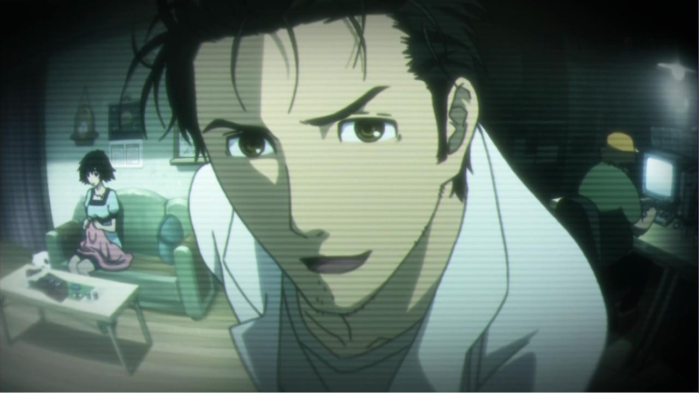
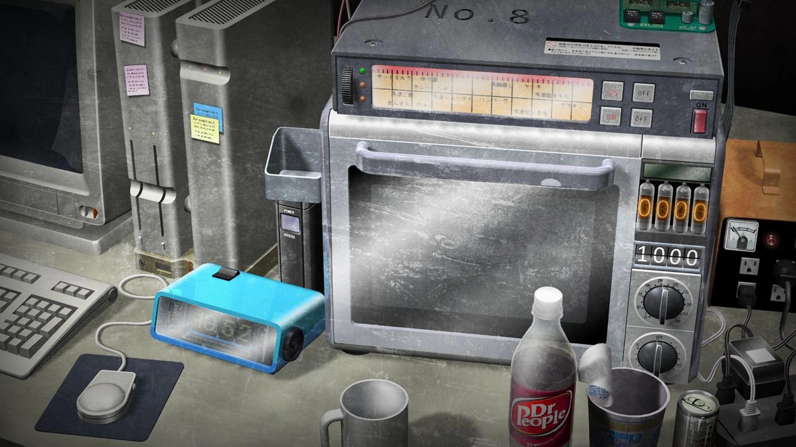
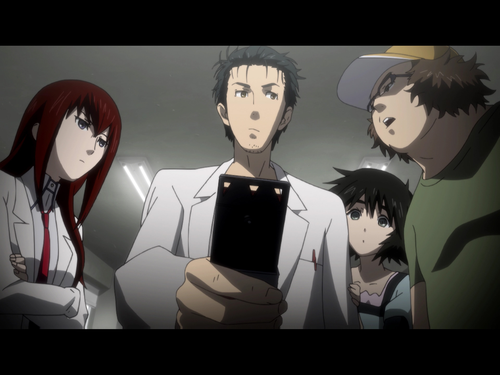

Steins;Gate é um anime que foca na trajetoria de Okabe Rintarou, autodenominado "Cientista Louco" Hououin Kyouma, que, sem querer desenvolve uma máquina do tempo modificando um microondas que é capaz de enviar informações (principalmente mensagens) (D-Mails) ao passado.
Conforme o anime passa podemos ver que a máquina denominada de Microondas Fone é muito mais poderosa e serve como base de estudos para futuramente desenvolver uma máquina mais avançada de viagem temporal que é visada por agentes do mundo, mais precisamente uma empresa chamada SERN que busca a tal viagem no tempo.
Steins;Gate foi baseado em uma coisa que aconteceu na internet nos anos 2000. Em 2000/2001, na internet aparece um cara chamado de John Titor que diz ser um viajante do tempo do ano de 2036. De forma resumida, ele havia viajado para os anos 2000 para coletar um computador IBM-5100 e para evitar uma suposta guerra que aconteceria em 2036.
 Retornar